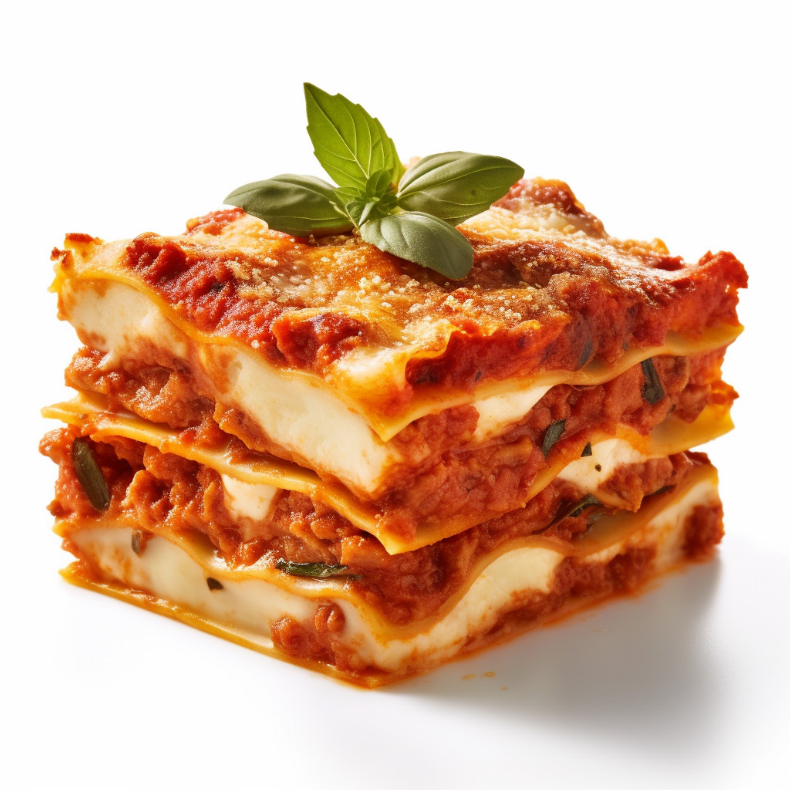

Lasagna
Italy's Food
About Lasagna :
Lasagna is a classic Italian dish made with layers of wide pasta sheets, typically alternating with rich and flavorful ingredients such as Bolognese sauce (a meat-based sauce), béchamel sauce (a creamy white sauce), and cheese (usually mozzarella, ricotta, and Parmesan). It's then baked until golden and bubbly, resulting in a hearty and comforting meal that's loved worldwide for its savory flavors and satisfying texture.
Ingredients:
- 9 lasagna noodles
- 1 lb (450g) ground beef or pork
- 1 onion, chopped
- 2 cloves garlic, minced
- 1 can (28 oz) crushed tomatoes
- 2 tablespoons tomato paste
- 1 teaspoon dried oregano
- 1 teaspoon dried basil
- Salt and pepper to taste
- 2 cups shredded mozzarella cheese
- 1 cup grated Parmesan cheese
- 2 cups ricotta cheese
- 1 egg
- Fresh parsley for garnish (optional)
Instructions:
- Preheat your oven to 375°F (190°C). Grease a 9x13 inch baking dish.
- Cook the lasagna noodles according to the package instructions until al dente. Drain and set aside.
- In a large skillet, cook the ground meat over medium heat until browned. Add chopped onions and garlic, and cook until softened.
- Stir in crushed tomatoes, tomato paste, oregano, basil, salt, and pepper. Simmer for about 10 minutes, stirring occasionally.
- In a bowl, mix together the ricotta cheese, egg, and half of the Parmesan cheese.
- To assemble the lasagna, spread a thin layer of the meat sauce on the bottom of the prepared baking dish. Arrange a layer of lasagna noodles on top. Spread half of the ricotta cheese mixture over the noodles, followed by a layer of mozzarella cheese. Repeat the layers.
- Finish with a final layer of meat sauce and sprinkle the remaining Parmesan cheese on top.
- Cover the baking dish with foil and bake in the preheated oven for 25 minutes.
- Remove the foil and bake for an additional 15 minutes, or until the lasagna is bubbly and the cheese is melted and golden.
- Let the lasagna cool for a few minutes before slicing. Garnish with fresh parsley if desired.
- Serve hot and enjoy your homemade lasagna!
Feel free to customize your lasagna with additional ingredients such as spinach, mushrooms, or bell peppers, according to your preference.